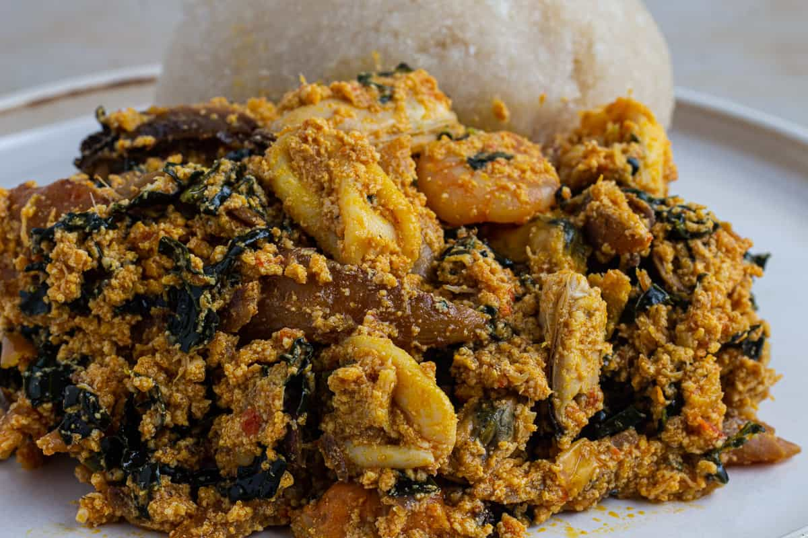

Egusi

Description
Egusi is a type of melon that is commonly used in African cuisine, particularly in West African countries such as Nigeria, Ghana, and Sierra Leone. The egusi melon is a large, round fruit with a hard outer shell and soft, white interior. The seeds of the egusi melon are rich in oil and protein, and are used to make a thick, flavorful soup or stew.
Egusi soup is a popular dish made by grinding the egusi seeds into a fine powder, and then cooking it with vegetables, meat, or fish, along with spices and seasonings. The soup is often served with a starchy side dish such as fufu, pounded yam, or rice.
In addition to its culinary uses, egusi is also used in traditional medicine in some African cultures. The oil from the egusi seeds is believed to have moisturizing and anti-inflammatory properties, and is sometimes used as a natural remedy for skin conditions and joint pain.
Ingredients
- Egusi (ground melon seeds)
- Meat, poultry, or fish (such as chicken, beef, goat, or fish)
- Vegetables (such as spinach, pumpkin leaves, or bitter leaf)
- Palm oil or vegetable oil
- Onions
- Garlic
- Tomatoes or tomato paste
- Stock or water
- Seasonings and spices (such as salt, pepper, chili powder, and bouillon cubes)
- Optional ingredients (such as crayfish, smoked fish, or dried shrimp)
Steps
- Prepare the Egusi: Grind the Egusi seeds into a fine powder using a spice grinder or a mortar and pestle.
- Brown the meat: In a large pot or Dutch oven, heat some oil over medium-high heat. Add the meat and brown it on all sides. Remove the meat and set it aside.
- Saute the onions and spices: Add chopped onions, garlic, and ginger to the pot, and sauté until the onions are translucent. Add any other spices or seasonings at this point, such as chili powder or bouillon cubes.
- Add the tomatoes: Add chopped tomatoes or tomato paste to the pot, and cook until the tomatoes are softened.
- Add the Egusi: Add the ground Egusi to the pot, and stir well to combine. Add enough stock or water to create a thick soup consistency.
- Add the meat and vegetables: Return the browned meat to the pot, along with any vegetables you're using, such as spinach or pumpkin leaves. Stir well to combine.
- Simmer the soup: Bring the soup to a simmer, then reduce the heat to low and cover the pot. Let the soup simmer for 30-40 minutes, or until the meat is tender and the vegetables are cooked.
- Adjust the seasoning: Taste the soup and adjust the seasoning as needed, adding more salt, pepper, or spices to taste.
- Serve the soup: Serve the Egusi soup hot, with a starchy side dish such as fufu, pounded yam, or rice. Enjoy!